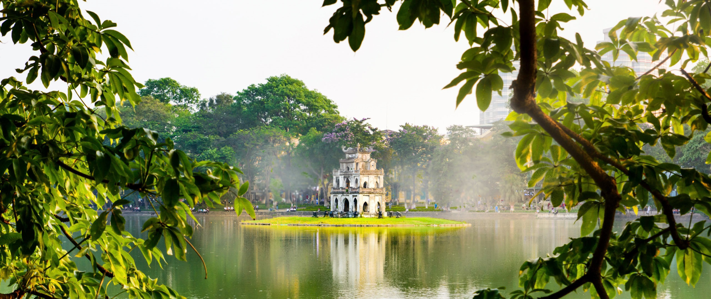

Huế
Huế là một thành phố trực thuộc tỉnh Thừa Thiên Huế, Việt Nam. Huế từng là kinh đô của Việt Nam thời phong kiến dưới triều Tây Sơn và nhà Nguyễn. Hiện nay, Huế là một trong những trung tâm lớn về văn hóa, du lịch, y tế, giáo dục.
Sài Gòn
Có thể nói Sài Gòn - TPHCM là thành phố sông nước, gồm có các sông Sài Gòn, Đồng Nai, Nhà Bè hiền hòa với 11 kênh rạch tỏa vào thành phố. Từ những con sông này tỏa vào thành phố mạng lưới kênh rạch dày đặc nối liền.
Hà Nội
Năm 2019, Hà Nội là đơn vị hành chính Việt Nam xếp thứ 2 về Tổng sản phẩm trên địa bàn (GRDP). Với vị thế là thủ đô, Hà Nội có bề dày lịch sử ngàn năm văn hiến, là trung tâm chính trị, văn hóa quan trọng nhất.
